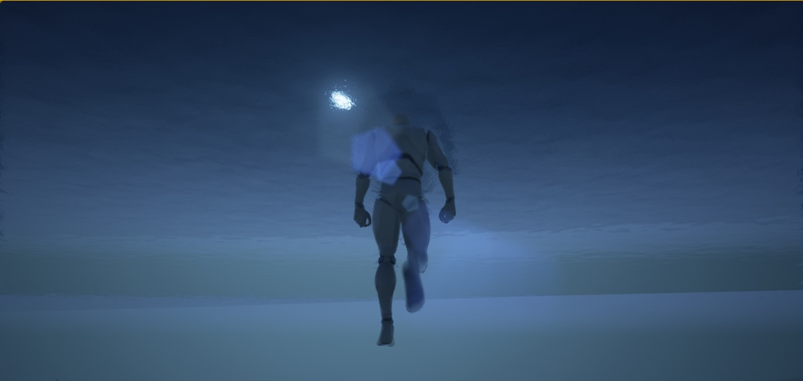
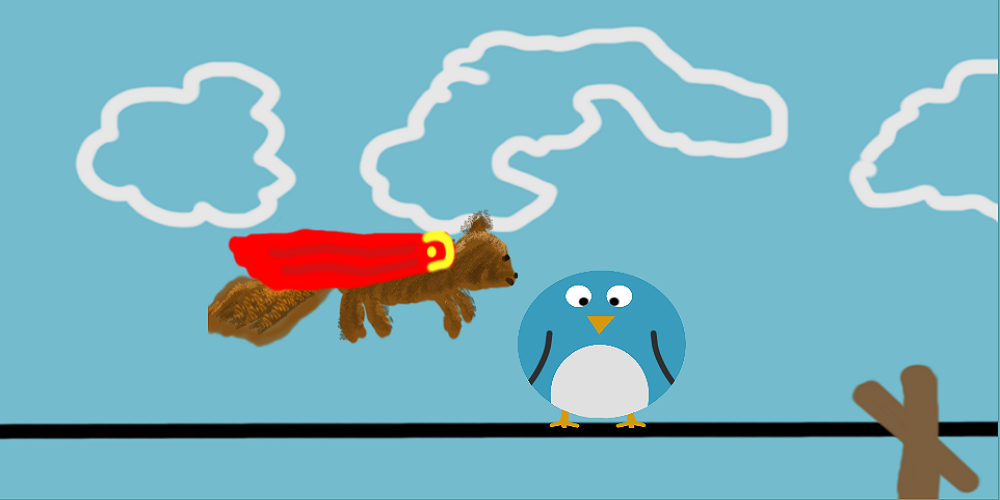
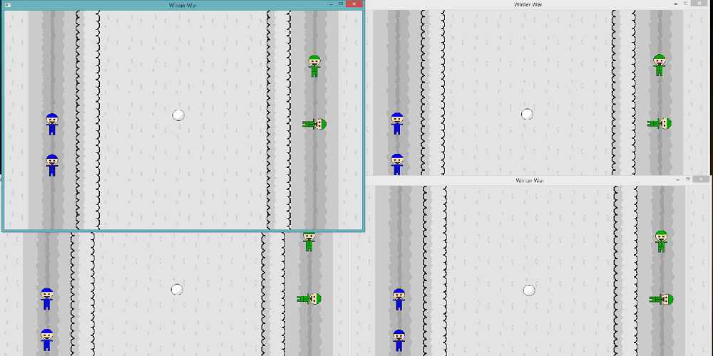
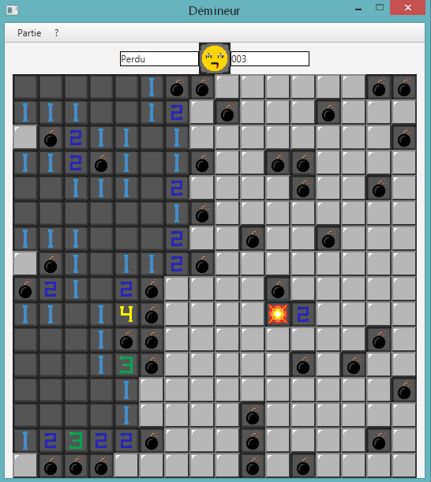
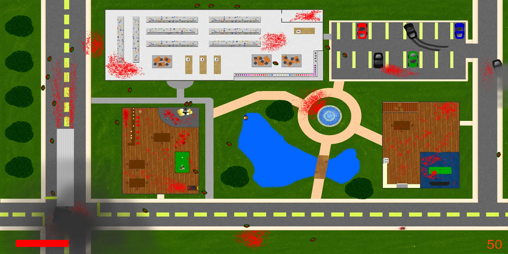

3D Game - Unity Jeu 3D - Unity
A Tower Offense where four players must cooperate to defeat enemies who defend themselves with their weapons, traps and towers. Jeu 3D avec des bonus qui est relié à une base de données afin d'afficher les statisques sur un site web.
Tool: Unity 3D Outil: Unity 3DSee more En savoir plus October 2015 Octobre 2015
3D Game Engine Moteur de jeu 3D
Project with a C# interface exporting an XML file for the C++ executable to create its objects. Multiple design patterns have been applied to keep a good architecture. Projet avec une interface C# générant un XML afin que l'exécutable C++ puisse créer ses objets. Plusieurs patrons de conception ont été appliqués afin d'avoir une bonne architecture.
Languages: C# et C++ Langages: C# et C++ See more
En savoir plus
May 2015
Mai 2015
See more
En savoir plus
May 2015
Mai 2015
3D Game - Unreal Engine Jeu 3D - Unreal Engine
3D game made with Unreal Engine to fiddle with 3D movements, level loading, particles and every other aspects of a game. Jeu 3D fait avec Unreal Engine afin d'expérimenter les mouvements 3D, les changements de niveau, les particules, etc.
Tool: Unreal Engine Outil: Unreal Engine See more En savoir plus June 2015 Juin 2015
Squirrel Town Squirrel Town
Game developped on PC with MVC and ported to Android. The game contains a splashscreen, a loading screen, a main menu, a town and multiple mini-games. By completing mini-games, the player acquires currency which serves to buy decorations in the tree that is situated in the town. The observer and state design patterns are used a lot in the game. One class made it easy to load the JavaFX view and link it to its controller. Jeu développé sur PC en MVC et porté sur Android. Le jeu comprend un splashscreen, un loading screen, un menu principal, le village et plusieurs mini-jeux. En complétant les mini-jeux, le joueur obtient des noisettes qui servent à acheter des décorations dans l'arbre qui se situe dans le village. Les patrons de conception «observer» et «state machine» sont très utilisés. Une classe était responsable du chargement de la vue JavaFX et d'y associer son contrôleur.
Language: Java Langage: Java November 2014 Novembre 2014
Winter War Winter War
Multiplayer game where each player can throw snowballs, warning the server, which distributes the message to three other players. Jeu multijoueur où chaque joueur peut lancer des balles de neige, avertissant le serveur, qui redistribue le message aux trois autres joueurs.
Language: Java Langage: Java October 2014 Octobre 2014
Minesweeper Démineur
Minesweeper game where the goal aims to have a good architecture with the implementation of the observer and using MVC. Jeu démineur où le but était d'avoir une bonne architecture avec l'implémentation de l'observateur et l'utilisation de MVC.
Language: Java Langage: Java October 2014 Octobre 2014
Music Z Music Z
First 2D game that accompanies a music player in Visual Basic. The goal was to survive as long as possible to a zombie invasion. The rate of zombie appearances was dependent on the volume of the music. Premier jeu 2D qui accompagnait un lecteur de musique en Visual Basic. Le but du jeu était de survivre le plus longtemps possible à une invasion de zombies. Le taux d'apparition des zombies était dépendant du volume de la musique.
Language: Visual Basic Langage: Visual Basic November 2013 Novembre 2013